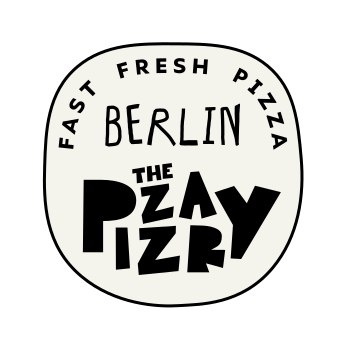

The Pizzary, Zimmerstraße 91, Berlin Mitte. Was wir im Google Profil gefunden, analysiert und schon verbessert haben.
Runterscrollen, 15 Folien
Intern. Enthält Geschäftszahlen, nicht öffentlich teilen.
The Pizzary ist bei Google gut aufgestellt: bestätigtes Profil, 4,7 Sterne, viel Sichtbarkeit. Die Schwächen liegen in Details, die Gäste sofort merken: falsche Zeiten, falsche Angaben, offene Rezensionen und eine Beschreibung, die nicht nach der Marke klingt.
Zwischen Mai und Oktober 2026 wurde das Profil 31.904 mal aufgerufen. 3.738 Gäste sind danach aktiv geworden: Route, Website, Speisekarte oder Anruf. Das sind 11,7 % der Aufrufe.
Buchungen gibt es nicht, Reservierungen sind im Profil aus.
Wer euch findet, steht meist schon in der Nähe und schaut aufs Handy. Das Maps Profil ist das Schaufenster. Es muss in Sekunden überzeugen: Zeiten, Fotos, Speisekarte, Bewertungen.
17.578 Suchen haben das Profil in den Ergebnissen gezeigt.
Das ist Laufkundschaft rund um Checkpoint Charlie, keine Markensuche. Gute Nachricht: Das Profil wird dort angezeigt. Entscheidend ist, was Gäste dann sehen.
So viele der Suchen nennen The Pizzary oder die Adresse direkt. Diese Gäste kommen gezielt, für sie zählen Zeiten und Speisekarte.
44 Suchen verbinden die Adresse mit dem Wilde Aparthotel, ein Gast schreibt, er nimmt die Pizza mit aufs Zimmer. Eine Karte oder ein QR Code an der Rezeption könnte sich lohnen.
79 Bewertungen geladen, Google zeigt 78.
Laut Google Maps (Wird auch oft gesucht): Pizza Berlino 4,9 bei 612 Bewertungen, Pizza Pasta Point 61 mit 4,8 bei 74. The Pizzary liegt mit 4,7 sehr gut, hat aber noch wenig Masse.
Die Texte der Rezensionen kommen immer auf dieselben fünf Dinge zurück.
Knusprig, heiß, frisch gebacken. Mehrfach wird die Salami Pizza hervorgehoben.
Eigene Pizza am Terminal zusammenstellen und dem Pizzabäcker beim Backen zusehen.
Freundlich, schnell, hilfsbereit. Ein Gast beschreibt, wie ein Mitarbeiter einem Kind beim Bestellen half.
Sauber, cooles Branding, schöne Pizzakartons.
Viele Toppings, vegetarische und vegane Optionen, Halal wird erwähnt.
Viele neue Bewertungen kommen auf Englisch und Spanisch. Touristen am Checkpoint Charlie sind eine eigene Zielgruppe.
Kritik gibt es selten, aber sie ist konkret. Die meisten Punkte lassen sich lösen, ohne das Konzept anzufassen.
Mehrere Gäste mit 3 und 4 Sternen: wenig Belag, eher Snack, ein Gast sagt Flammkuchen. Einer wundert sich, dass der Preis bei weniger Zutaten gleich bleibt.
Ein Gast dachte, er belegt die Pizza selbst in der Küche.
Kruste teils schwarz, im Laden sehr warm. Eine Salami wirkte lasch.
Eine Gästin fragt, ob der Aufkleber auf der Papierunterlage gesundheitlich unbedenklich ist.
1 Stern, mit Foto: nur zwei kleine Stücke Hähnchen. Noch unbeantwortet.
Ein Gast musste Bargeld abgeben lassen, ein anderer wartete vor Ort lange und vermisste Meeresfrüchte.
Lange Textbausteine, am Ende immer der Satz, man hoffe, die Gäste bald wieder zu begrüßen. Wirkt formelhaft.
Persönlich, teils mit Tippfehlern. Passt zur Marke, wirkt aber unfertig.
Antworten auf Französisch, Polnisch, Spanisch und Englisch. Das ist stark, aber auch hier fehlt ein einheitlicher Ton.
Hey, das tut uns leid. So soll ein Salat bei uns nicht ankommen. Schreib uns kurz, welcher es war, wir schauen uns die Hähnchenmenge direkt an. Dein Team von The Pizzary
| Verknüpfung | Stand | Bewertung |
|---|---|---|
| Website | thepizzary.de, bei Google auf Platz 1 mit Unterseiten | Verknüpft, aber ohne Strukturdaten, Maps Link und Öffnungszeiten |
| Speisekarte | Externer Link auf thepizzary.online-karte.com | Keine Speisekarte direkt in Google, 616 Gäste haben sie gesehen |
| @the_pizzary im Profil verlinkt | In Ordnung | |
| Google Ads | Konto seit 01.04.2026 mit allen Standorten verknüpft | Es scheint keine Kampagne zu laufen, in Ads selbst nicht geprüft |
| Lieferplattformen | Uber Eats, Wolt und Lieferando erscheinen in der Google Suche | Keine Bestell Links im Profil, Lieferando bewirbt den Markennamen mit einer Anzeige |
Alles am 26.10.2026 im Google Profil geändert und danach im Profil kontrolliert. Alle sieben Änderungen sind live.
Die Lieferzeit bis 22:15 ist eine Annahme, 15 Minuten vor Ladenschluss wie bisher. Bitte mit den Plattformen abgleichen.
Deine Pizza. Deine Regeln. Bei The Pizzary baust du deine Pizza am Terminal selbst zusammen: Boden, Soße, Käse und Toppings. Oder du nimmst eine der 8 Signature Pizzen. Der Teig wird bei uns im Laden gemacht und ruht mindestens 24 Stunden. Deine Pizza ist in rund 180 Sekunden fertig, und du siehst zu, wie sie gebacken wird. Es gibt vegetarische und vegane Optionen. Wir sind an der Zimmerstraße in Berlin Mitte, ein paar Schritte vom Checkpoint Charlie. Bestellt wird am Terminal, bezahlt wird nur mit Karte, Bargeld geht nicht. Zum Hier essen oder Mitnehmen, täglich von 11:30 bis 22:30 Uhr.
Vorher: Was als eine einzige Vision begann, ist zu The Pizzary herangewachsen, einem Zuhause für außergewöhnlichen Genuss in Berlin. Jeder Standort ist so gestaltet, dass er sein Viertel widerspiegelt … Hommage an d
Zwei Rezensionen erwähnen kostenlose Pizza. Google verbietet Bewertungen im Tausch gegen Vorteile und kann sie entfernen. Künftig nur ehrlich fragen, ohne Geschenk.
Eine 5 Sterne Bewertung stammt von der Agentur der Website und sagt selbst, sie könne noch nichts zur Pizza sagen. Auch das kann gelöscht werden.
Das Profil hat das Fundament. Mit richtigen Zeiten, ehrlichen Angaben und schnellen Antworten wird aus dem Schaufenster ein Verkäufer.
Nächster Schritt: Antworten, Speisekarte, Beitrag
